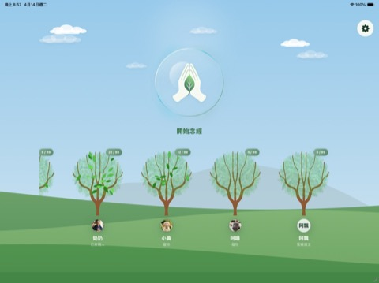
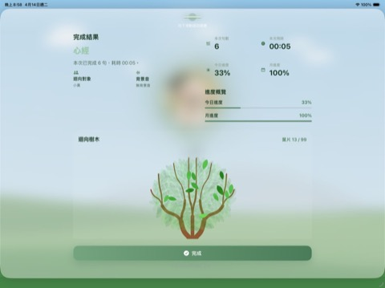

讓每一句念誦，都有溫柔的歸處
心意，
終有所歸。
念有所歸 是一款為思念而生的森林系 iOS App。 專為想透過念誦與祈禱，將祝福與福報送給親人或故人的你所設計。 讓這份思念不再只是回憶，而是每一片因你祝福而繁茂的綠葉。
- iPhone / iPad 都適合
- 可愛卡通森林風
- 支援續誦、提醒、備份

首頁
一按就能開始念經
草原
每位對象都有自己的願樹
功能亮點
每一句，皆是儀式。
合十。即興。隨心。
「開始念經」不再是繁瑣的設定。我們將核心動作置於首位， 讓你先進入靜心祝福的心境，再於過程中從容選擇想送出的經文與心願。
誦念。如影隨形。
支援動態字幕、多段速度控制與暫停續誦。無論是清晨的短暫靜坐 還是深夜的深情祝禱，流暢的介面都能契合你的呼吸律動。
慈悲。長成願樹。
每一份心意都有歸宿。為父母、摯友或寵物建立專屬的願樹， 看著念誦的點滴長成繁茂的枝葉，讓慈悲在視覺中具象化。
紀錄。安穩如初。
精緻的紀錄報表見證你對他（或牠）的每一分心意。搭配 iCloud 同步與 安全備份機制，讓這份珍貴的祝福紀錄永不遺失。
畫面巡禮
指尖，生出森林。

經文介紹
八部經文。心念所集。
經文。心念所集。
內容包已把每部經文整理成選單卡片，方便依心境挑選合適的誦念內容。
核心。即刻開始。
免費版保留心經、大悲咒、南無阿彌陀佛、普門品、藥師經，適合先熟悉流程與日常使用。
解鎖。完整收錄。
買斷版一次開放完整內容，沒有月費，適合長期持續使用。
大悲咒
穩定、溫柔、長念
長句持誦、安定呼吸，適合慢慢念、收攝心念。
心經
簡潔、聚焦、安定
篇幅精簡、聚焦清楚，適合每日固定持誦。
藥師經
願力、護持、清明
願力護持、明淨沉穩，適合祈願平安康健。
地藏經
孝親、追思、發願
孝親追思、安住願心，常用於迴向祖先與亡者。
阿彌陀經
念佛專注、導向安穩
佛號清明、導向安穩，適合發願往生、安住心念。
南無阿彌陀佛
短句反覆、容易持續
短句反覆、容易持續，適合走路、忙碌時持念。
普門品
觀音願力、慈悲感應
慈悲柔和、安定人心，適合祈求護佑、解除不安。
金剛經
觀照空性、句意深沉
觀照深沉、斷除執著，適合想法繁多時回到清明。
免費版與買斷版
選擇，你傳遞心意的方式。
先開始使用，不必先付費
NT$ 0
核心誦念流程可直接使用，適合先熟悉 app。
- 迴向對象最多 2 個
- 只顯示限定經文清單
- 進度、目標、備份完整可用
- 沒有月費，不會自動扣款
一次購買，永久解鎖
依 App Store 顯示
實際售價會由 App Store 即時回傳，介紹頁不硬寫固定金額。
- 迴向對象無上限
- 全部 8 部內建經文開放
- 仍保有進度、備份、提醒與同步
- 一次付費，沒有每月費用
差異一眼看懂
迴向對象
免費 2 個 / 買斷無上限
經文內容
免費限定清單 / 買斷 8 部全開
付款方式
免費版不需付款 / 買斷版一次付費
費用型態
沒有月費
貼心細節
安定，藏在細節。
念誦時的溫柔陪伴
- 極簡視覺：可切換大字級閱讀，並為長輩提供直覺的獨立操作入口。
- 自然聲景：內建「靜池無波、石上清流」等多款柔和背景音，助你快速入定。
- 彈性控制：支援一鍵切換純念誦模式，自動保存進度，中斷後可無縫銜接。
安心感與長期連結
- 進度總覽：首頁與結果頁具象化展示今日、本月與全年的成長趨勢。
- 數位典藏：一鍵導出 HTML 祝福報表，讓這份對親人的深情具備可視化的收藏價值。
- 多端同步：深度整合 iCloud，無論在哪個裝置，思念始終與你同步。